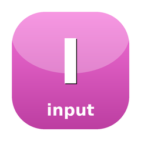

SugarInput
Terminal escape sequence decoder

The missing input layer for PHP TUI. EscapeDecoder consumes raw TTY bytes and emits typed Event objects — plain and legacy keys (including modified xterm forms), Kitty keyboard protocol, SGR 1006/1016 + urxvt 1015 + X10 mouse, focus events, bracketed paste, and a typed drain for terminal replies (DA, DSR/CPR, mode reports, Kitty flags). Reentrant and fuzz-friendly, chunk-invariant in the events it emits once deferTrailingEscape holds a lone ESC, with counters that make dropped or discarded input observable.
Install
composer require sugarcraft/sugar-inputQuickstart
use SugarCraft\Input\Driver\StreamInputDriver;
use SugarCraft\Input\Event\FocusEvent;
use SugarCraft\Input\Event\KeyEvent;
use SugarCraft\Input\Event\MouseEvent;
use SugarCraft\Input\Event\PasteEvent;
use SugarCraft\Input\Event\TerminalReplyEvent;
$driver = new StreamInputDriver(STDIN);
while (!$driver->isEof()) {
$event = $driver->read();
if ($event === null) {
if (!$driver->hasPending()) {
usleep(2_000); // nothing buffered — back off before polling again
}
continue;
}
match (true) {
$event instanceof KeyEvent => handleKey($event),
$event instanceof MouseEvent => handleMouse($event),
$event instanceof PasteEvent => handlePaste($event),
$event instanceof FocusEvent => handleFocus($event),
$event instanceof TerminalReplyEvent => handleReply($event),
default => handleOther($event),
};
}One termination caveat: isEof() means "ended and drained", not "ended". A stream that stops mid-sequence leaves the decoder holding a partial, so isEof() stays false and read() answers null forever — call escapeDecoder()->reset() (or bound the loop with a grace period) when shutdown must win over an unfinished frame.
Concepts
The lib is a byte decoder. It never reads the terminal and never writes to it. The host puts the terminal into raw mode and negotiates the mouse, paste, focus and Kitty modes, then hands the decoder the bytes the terminal sends. EscapeDecoder::decode() turns each complete sequence into one typed Event, and it buffers a partial sequence until the rest arrives, so the output does not depend on how the bytes were chunked when deferTrailingEscape is on. By default a read that ends on a lone ESC settles it as an Escape key at once, so a split right after a 0x1b byte can decode differently from a single call.
Each sequence belongs to one protocol family: legacy keys, Kitty keyboard, mouse, focus, bracketed paste, or a terminal reply. EscapeDecoderOptions switches families on and off. A frame from a disabled or unknown family is counted in droppedUnknownCount(), never decoded as a different key. Terminal replies, such as a cursor position report, are drained as TerminalReplyEvent values instead of being dropped.
Tasks
- Read keys from a non-blocking stream. Build a
StreamInputDriveroverSTDIN, callread()in a loop, and sleep briefly when it returns null withhasPending()false. - Put the terminal in the right shape first. Disable canonical mode and echo before decoding, for example with
stty -icanon -echoor sugar-pty. Then enable the modes you need:?1006for mouse,?2004for bracketed paste,?1004for focus. The decoder never writes these itself. - Handle a Kitty key release. Check
KeyEvent::isRelease(). Release events arrive with aReleaseprefix on the key name, and autorepeat frames setisRepeatand decode as presses. - Hold a trailing ESC until input goes idle. The default settles a lone ESC at once, as an immediate Escape key. Set
deferTrailingEscapeto hold it, then callflushDeferredEscape()on an input-idle timer. - Recover from an unterminated paste or partial frame. Call
reset()on the decoder, or bound the loop with a grace period, so shutdown wins over an unfinished frame. - Resize without polling. Create a
SignalResizeDriver, callarm()to install the SIGWINCH handler, and readResizeEventvalues from it.arm()returns false without ext-pcntl.
EscapeDecoder
EscapeDecoderOptions
Five readonly booleans — enableMouse, enableKitty, enableFocus, enablePaste (all true by default) and deferTrailingEscape (false by default) — decide which protocol families the decoder interprets. A disabled family's frames are counted drops, never mis-decoded keys.
InputDriver
StreamInputDriver additionally answers isEof() and hasPending() — the null alone does not distinguish idle from ended — and both the stream and React drivers expose their owned decoder via escapeDecoder() for reset(), the flush helper, and the counters.
Event types
ReleaseA (isRelease()), repeats as isRepeatKeyModifier
Modifiers arrive on events and are read with includes() / value(). The constants SHIFT, ALT, CTRL, META, SUPER, HYPER, CAPS_LOCK, NUM_LOCK document the wire bit layout the decoder maps from — Kitty lock-state bits arrive on the explicit-event-type form — and the constructor is private, so masks are not built by hand.
Configuration and options
| Option | Type | Default | Effect |
|---|---|---|---|
enableMouse | bool | true | Decodes X10, urxvt 1015 and SGR 1006/1016 mouse frames. Disabled frames count as drops. |
enableKitty | bool | true | Decodes Kitty keyboard protocol frames, including releases and repeats. |
enableFocus | bool | true | Decodes focus gained and lost reports (DECSET 1004). |
enablePaste | bool | true | Decodes bracketed paste into PasteEvent, capped at 1 MiB. |
deferTrailingEscape | bool | false | Holds a lone trailing ESC until flushDeferredEscape() settles it on input idle. |
The options are readonly values passed to the EscapeDecoder constructor. A null argument uses the defaults. The options change parsing only. They do not turn modes on or off on the terminal, and the host still sends those sequences.
Keys and key names
Key events carry a symbolic key name, a KeyModifier bitmask and the raw bytes. Names cover literal characters, the arrows, Home, End, PageUp, PageDown, Insert, Delete, Backspace, Tab, Enter, Escape, and Ctrl plus a letter. Legacy function keys run from F1 to F24, and the Kitty protocol reaches F35. Modifiers are read with includes() and value(), and KeyModifier::none(), shift(), ctrl() and their combinations are the named constructors.
Mouse events carry x, y, button and action. X10 release frames report button 3, so match releases on action, not on the button index.
Theme and styling
Not applicable. This lib decodes input and draws nothing, so it has no theme, color or style surface. Rendering belongs to the host or to the output libraries, and the decoded events are plain PHP values.
Examples
examples/decode.php is an EscapeDecoder micro-demo. It feeds labeled byte frames through the decoder and prints each event: literal keys, legacy arrows, Kitty arrows and releases, modifyOtherKeys, SGR mouse, drained replies, focus, and a bracketed paste. The forged mouse frame is refused, so it prints a label and no event line. Every frame is written with explicit hex escapes, so the file survives editor and terminal mangling of control bytes. Run it with php examples/decode.php.
Testing
Run the suite from the lib root:
composer install && vendor/bin/phpunitThe suites cover the decoder and its options, each driver, the event classes, the modifier bitmask, the terminal-reply drain, and a key table parity check. Feed the decoder split byte streams in your own tests and compare the events. With deferTrailingEscape set, the emitted events should match a single-call decode, because the decoder is then chunk-invariant in its events. The paste overshoot counter is not: discardedPasteBytes() can differ by chunking, so do not assert counter parity across different splits. Under the default options, a split right after a 0x1b byte can emit an Escape key before the rest of the sequence arrives, so compare those boundaries with the option on.
Troubleshooting and FAQ
- Arrow keys do not reach the decoder, or echo back as escape text. The terminal is still in canonical mode with echo on, so the bytes wait in the line buffer or echo to the screen. Disable ICANON and ECHO before decoding.
- The loop never ends after the stream closes.
isEof()means ended and drained. A stream that stops mid-sequence leaves a partial in the decoder, so callescapeDecoder()->reset()or bound the loop with a grace period. - A key from a Kitty-capable terminal is missing. Check
droppedUnknownCount(). A frame from a disabled family, or an unknown one, is refused and counted, and the decoder never guesses at it. - Paste text is truncated. Paste above 1 MiB is clipped, and
PasteEvent::truncatedis true. The overflow is discarded and the announcement fires once. The overshoot past the cap in the read that crosses it is counted indiscardedPasteBytes()at once, and bytes arriving after that are counted as they arrive; only a paste that crosses the cap and ends in the same read is truncated without any overshoot count. - Parameterized focus reports such as
CSI 1;3Iare ignored. This is intentional. Those forms are dropped, as xterm never sends them. 8-bit C1 controls are also not treated as sequence starts. arm()returns false on Windows or without pcntl. SIGWINCH detection is POSIX-only and needs ext-pcntl. Without it, the resize driver is inert and the host must detect resizes some other way.
Upstream mapping
The decoding semantics follow the input handling in charmbracelet/bubbletea. The port is native PHP. The README and body describe the typed terminal-reply draining and the 1 MiB paste cap as additions beyond the upstream surface.
| Concern (bubbletea input) | SugarInput |
|---|---|
| Key message from raw bytes | EscapeDecoder::decode() returning KeyEvent |
| Mouse message | MouseEvent (X10, 1006, 1015) |
| Paste message | PasteEvent, capped at 1 MiB |
| Focus message | FocusEvent |
| Terminal replies | TerminalReplyEvent, drained instead of dropped |
Architecture
EscapeDecoder is the core. It holds the partial-sequence buffer, the paste state and the counters, and it applies the EscapeDecoderOptions family switches. The stream and React drivers wrap a source and call the decoder. StreamInputDriver reads a non-blocking stream. ReactInputDriver emits events from a ReactPHP readable stream. SignalResizeDriver turns SIGWINCH into ResizeEvent. StreamInputDriver and ReactInputDriver expose their owned decoder through escapeDecoder(), which is the seam for reset(), the flush helper and the counters. SignalResizeDriver holds no decoder, so it has no escapeDecoder(). Events are value classes in the Event namespace.
Two decoders exist in the fleet. sugar-input is the byte-level decoder used by sugar-readline, sugar-pty and the input-facing apps. sugar-core's InputReader runs on every sugar-core Program. A program should use one of them for its whole input path, not both.
Changelog and versioning
The package ships no CHANGELOG file. The commit history of sugar-input/ in the monorepo is the record of changes. The install line takes the monorepo's current release line.
Use it for
- Real-TTY input — decode raw bytes instead of symbolic key names, on plain streams or ReactPHP loops.
- Interactive TUI programs — keyboard and mouse input without depending on a specific runtime.
- Kitty keyboard protocol — event frames
CSI code;mods u, including key release events (releasedaarrives asReleaseA); the flags query/reply uses theCSI ?…ushape and drains as a reply. - Safe paste handling — bracketed paste with a 1 MiB cap whose overflow is discarded, not replayed, so hostile input cannot forge keystrokes.
- Foundation for any input-consuming lib — pure byte decoding with no event-loop requirement; drivers add stream/ReactPHP/pcntl plumbing.
Source & demos
- Source on GitHub
- Full README
- Test suite
- examples/decode.php — labeled frames decoded to events, in the terminal
- Native PHP — decoding semantics follow charmbracelet/bubbletea's input handling.
API
| Class | Method | Description |
|---|---|---|
| EscapeDecoder | __construct(?EscapeDecoderOptions $options = null) | Choose which protocol families decode |
| EscapeDecoder | decode(string $bytes): list<Event> | Decode byte buffer, buffer partials |
| EscapeDecoder | remainder(): string | Get unconsumed bytes |
| EscapeDecoder | flushDeferredEscape(): list<Event> | Settle a deferred lone ESC on input idle |
| EscapeDecoder | drainedReplyCount(): int | Terminal replies drained as events |
| EscapeDecoder | droppedUnknownCount(): int | Frames refused (unknown or disabled family), an incomplete sequence whose buffered tail passes the 128-byte cap, or an unterminated OSC/DCS string abandoned past its 64 KiB budget |
| EscapeDecoder | discardedPasteBytes(): int | Paste bytes discarded after a paste overflow (paste only, never sequences) |
| EscapeDecoder | reset(): void | Clear partial, paste and string state |
| StreamInputDriver | read(): ?Event | Next event from stream, or null (idle/EOF) |
| StreamInputDriver | isEof(): bool / hasPending(): bool | Distinguish ended-and-drained from idle |
| StreamInputDriver | escapeDecoder(): EscapeDecoder | Seam to the owned decoder (reset/counters/flush) |
| ReactInputDriver | on('data'): events | Emits decoded Events as they complete (event emitter, not a pull driver) |
| ReactInputDriver | isReadable() / pause() / resume() / close() | ReadableStreamInterface surface; pause buffers, resume flushes |
| ReactInputDriver | pipe(WritableStreamInterface): WritableStreamInterface | Forwards raw bytes of the wrapped stream |
| ReactInputDriver | escapeDecoder(): EscapeDecoder | Seam to the owned decoder |
| SignalResizeDriver | arm(): bool | Install the SIGWINCH handler; false without ext-pcntl (constructor is side-effect free) |
| SignalResizeDriver | disarm(): bool | Hand the process disposition back (previous handler, or SIG_DFL) |
| SignalResizeDriver | read(): Event|ResizeEvent|null | InputDriver surface: returns a fresh ResizeEvent when a SIGWINCH landed since the last read, else null |
| KeyEvent | key: string | Symbolic key name (releases: Release + capitalised name) |
| KeyEvent | modifiers: KeyModifier | Modifier bitmask |
| KeyEvent | raw: string | Raw bytes that produced this event |
| KeyEvent | isRelease(): bool | True for Kitty key-release events |
| KeyEvent | isRepeat: bool | True for Kitty autorepeat frames (decode as press) |
| MouseEvent | x, y: int | Column and row (1-based; cells under 1000/1006, pixels under 1016 — the decoder keeps each field's first integer verbatim, units belong to the reporting mode) |
| MouseEvent | button: int | Button index (0=left, 1=middle, 2=right; scroll 96=up, 97=down, 98=wheel-left, 99=wheel-right; X10 releases report 3 — match releases on action, not the button index) |
| MouseEvent | action: string | press | release | drag | scroll (constructor refuses anything else) |
| FocusEvent | gained: bool | True if focus gained, false if lost |
| FocusEvent | raw: ?string | Escape sequence that produced the event |
| PasteEvent | content: string | Pasted content (max 1 MiB) |
| PasteEvent | truncated: bool | True when content was clipped to the cap |
| PasteEvent | truncationNotice(): ?string | Localized one-liner explaining the clip, or null |
| TerminalReplyEvent | family: string | One of the eight reply families (see FAMILIES) |
| TerminalReplyEvent | params / paramsDropped / raw / body / truncated | Parsed reply parameters (first MAX_PARAMS = 32 ride the event; the count the wire carried beyond the cap rides paramsDropped) and the bytes that carried them |
| TerminalReplyEvent | is(string $family): bool | Family check |
| ResizeEvent | cols, rows: int | New terminal dimensions |
| KeyModifier | none() / shift() / alt() / ctrl() / altShift() / ctrlShift() / altCtrl() / all() | Named factories (memoized) |
| KeyModifier | fromKittyInt() / fromSgrMouse() / fromXtermParam() | Wire decoders for each protocol's modifier encoding |
| KeyModifier | includes(int $flag): bool | Check if flag (e.g. KeyModifier::SHIFT) is set |
| KeyModifier | equals(KeyModifier $other): bool | Bitmask equality |
| KeyModifier | value(): int | Raw bitmask value |
Only methods declared in sugar-input/src, or inherited from a parent declared there, are listed. A type that extends a class outside that tree, such as \RuntimeException, does not show the methods of that class.
SugarCraft\Input
EscapeDecoder final class
Terminal escape sequence decoder.
| Method | Summary |
|---|---|
__construct(?EscapeDecoderOptions $options = null) | |
decode(string $bytes): array | Decode a byte buffer into zero or more Events. |
remainder(): string | Get bytes that couldn't be consumed as part of a complete sequence. |
drainedReplyCount(): int | Count of unsolicited terminal replies drained into TerminalReplyEvent since the last reset() — the counters measure one decoder epoch, not a process lifetime. Distinguishes "recognized and drained" from the silent drops counted by droppedUnknownCount(). |
droppedUnknownCount(): int | Count of complete-but-unrecognized sequences consumed with no event (unknown CSI finals, malformed runs, unknown Kitty key codes) since the last reset(); reset() clears it along with the state. |
discardedPasteBytes(): int | Bytes of paste body swallowed past the 1 MiB cap while waiting for the paste's real 201~ terminator (the truncated PasteEvent announce fires once, at the cap). A forged paste that never sends the terminator keeps discarding — this counter grows monotonically and is the visible proof the tail became nothing rather than keys. reset() clears it along with the state. |
flushDeferredEscape(): array | Resolve a lone trailing ESC deferred by the deferTrailingEscape option into the Escape key it (probably) was. Call from an application timer once no more input arrives within the escape-timeout window; if the buffered tail is exactly one ESC byte, clear it and return that KeyEvent. A held lone ESC P (no > followed) resolves the same way, to Alt+P. |
reset(): void | Clear the partial-sequence buffer, paste/string state, overflow-discard states, and reply counters. This is the host's recovery lever for a forged paste whose 201~ terminator never arrives (the decoder otherwise keeps discarding, by design, so no attacker byte can become a key). |
EscapeDecoderOptions final class
Configuration options for EscapeDecoder protocol filtering.
| Method | Summary |
|---|---|
__construct(public readonly bool $enableMouse = true, public readonly bool $enableKitty = true, public readonly bool $enableFocus = true, public readonly bool $enablePaste = true, public readonly bool $deferTrailingEscape = false) | |
withMouse(bool $enabled = true): self | |
withKitty(bool $enabled = true): self | |
withFocus(bool $enabled = true): self | |
withPaste(bool $enabled = true): self | |
withTrailingEscapeDeferral(bool $deferred = true): self |
Event interface
Marker interface for all input events produced by EscapeDecoder.
InputDriver interface
Contract for a pull-based source of decoded terminal events.
| Method | Summary |
|---|---|
read(): Event|null | Read and return the next input event, or null when none is available (EOF on a stream driver, no pending signal on the resize driver — each implementation documents which). |
KeyModifier final class
Modifier key flags for keyboard and mouse events.
| Method | Summary |
|---|---|
static none(): self | No modifiers held. |
static alt(): self | Alt modifier. |
static ctrl(): self | Ctrl modifier. |
static shift(): self | Shift modifier. |
static altShift(): self | Alt+Shift modifiers. |
static ctrlShift(): self | Ctrl+Shift modifiers. |
static altCtrl(): self | Alt+Ctrl modifiers. |
static shiftAltCtrl(): self | Shift+Alt+Ctrl — the bits the legacy CSI wire forms can express. |
static all(): self | |
static fromMask(int $mask): self | Rebuild an instance from a stored mask value (the IPC/bridge seam for hosts that persisted value()). Refuses anything outside the defined bit union — a phantom bit fails fast at the boundary instead of travelling silently through the event stream. |
static fromKittyInt(int $raw): self | Build a modifier mask from a raw Kitty modifier bitmask (bits already de-based by the caller: the wire field is 1 + mask). Bit layout per the Kitty keyboard protocol: bit 0=Shift, bit 1=Alt, bit 2=Control, bit 3=Super, bit 4=Hyper, bit 5=Meta, bit 6=CapsLock, bit 7=NumLock. |
static fromSgrMouse(int $raw): self | Build a modifier mask from an SGR mouse modifier field. SGR uses: bit 0=Shift, bit 1=Alt, bit 2=Ctrl. |
static fromXtermParam(int $xtermParam): self | Build a modifier mask from an xterm modified-key parameter. |
includes(int $flag): bool | Check if a specific modifier flag is set. |
value(): int | Get the raw bitmask value. |
equals(self $other): bool |
Lang final class
Per-library translation facade for sugar-input.
SugarCraft\Input\Driver
ReactInputDriver final class
ReactPHP-compatible input driver that wraps a ReadableStreamInterface.
| Method | Summary |
|---|---|
__construct(private readonly ReadableStreamInterface $stream, ?EscapeDecoderOptions $options = null) | |
escapeDecoder(): EscapeDecoder | The decoder instance behind this driver — the seam for reset() after a forged unterminated paste and for the drop/drain counters. |
isReadable(): bool | Checks whether this stream is in a readable state. |
pause(): void | Pauses receiving data events. |
resume(): void | Resumes receiving data events. |
pipe(\React\Stream\WritableStreamInterface $dest, array $options = []): \React\Stream\WritableStreamInterface | Pipes the underlying byte stream into the given writable destination. |
close(): void | Closes the stream and emits a 'close' event. |
SignalResizeDriver final class
InputDriver that detects terminal resize events via SIGWINCH signals.
| Method | Summary |
|---|---|
__construct(?callable $commandRunner = null, ?callable $ttyProbe = null) | |
arm(): bool | Opt in to the driver's process-global side effects. |
disarm(): bool | Undo arm() for this instance (m3: arming used to be a one-way door). |
read(): Event|ResizeEvent|null | Read the next resize event, or null if no resize has been detected. |
StreamInputDriver final class
InputDriver backed by a PHP stream resource (e.g. STDIN).
| Method | Summary |
|---|---|
__construct(private readonly mixed $stream, ?EscapeDecoderOptions $options = null) | |
__destruct() | |
escapeDecoder(): EscapeDecoder | The decoder instance behind this driver — the seam for hosts that need reset() after a forged unterminated paste, flushDeferredEscape() on an input-idle timer (with deferTrailingEscape), or the drop/drain counters. |
isEof(): bool | True once the stream has reached end-of-file AND every buffered and remainder event has been handed out. |
hasPending(): bool | True when more events are already decoded and waiting (driver buffer or decoder remainder) — distinguishes "keep pulling" from a true idle. |
read(): Event|null | Read the next Event from the stream, or null when the non-blocking read found no data (also returned forever after EOF once buffers are drained). |
SugarCraft\Input\Event
FocusEvent final readonly class
Focus event — terminal window gained or lost focus.
| Method | Summary |
|---|---|
__construct(public bool $gained, public ?string $raw = null) |
KeyEvent final readonly class
A keyboard event — plain key or escape sequence decoded key.
| Method | Summary |
|---|---|
__construct(public string $key, public KeyModifier $modifiers, public string $raw, public bool $isRepeat = false) | |
isRelease(): bool | True when this is a key RELEASE event: the name is the "Release" prefix followed by the press name with its first letter capitalised ("ReleaseA", "ReleaseArrowUp"). Only the Kitty protocol can report releases, so this is false for every other source. |
static plain(string $char, ?KeyModifier $modifiers = null): self | A bare printable key: the character IS the event, so $raw defaults to $char and a null $modifiers means "no modifiers held" (KeyModifier::none() — PHP cannot default a parameter to a method call, hence the nullable). |
static esc(string $key, ?KeyModifier $modifiers = null, string $raw = ''): self | A named key (ArrowUp, Enter, F5, ...). Null $modifiers means none held; empty $raw falls back to the bare ESC byte, which is honest only for Escape itself — callers with real wire bytes should pass them. |
MouseEvent final readonly class
A mouse event (SGR 1006/1016, urxvt 1015, X10 1000).
| Method | Summary |
|---|---|
__construct(public int $x, public int $y, public int $button, public string $action, public KeyModifier $modifiers) | |
isScroll(): bool | |
static scrollUp(int $x, int $y, ?KeyModifier $modifiers = null): self | Scroll up — wire button code 64 (SGR/X10), normalized to stored code 96. |
static scrollDown(int $x, int $y, ?KeyModifier $modifiers = null): self | Scroll down — wire button code 65 (SGR/X10), normalized to stored code 97. |
static scrollLeft(int $x, int $y, ?KeyModifier $modifiers = null): self | Horizontal wheel left — wire button code 66 (SGR/X10), stored as 98. |
static scrollRight(int $x, int $y, ?KeyModifier $modifiers = null): self | Horizontal wheel right — wire button code 67 (SGR/X10), stored as 99. |
PasteEvent final readonly class
A bracketed paste event — content being pasted from the clipboard.
| Method | Summary |
|---|---|
__construct(string $content, bool $truncated = false) | |
static truncate(string $content): self | Clip a paste to MAX_SIZE. Since the cap binds in the constructor this is a plain construction; the factory is kept for its name at call sites. |
truncationNotice(): ?string | Translated notice describing the cap, or null when the paste is intact. |
ResizeEvent final readonly class
A terminal resize event (SIGWINCH).
| Method | Summary |
|---|---|
__construct(public int $cols, public int $rows) |
TerminalReplyEvent final readonly class
A terminal REPLY that arrived unsolicited on the input stream.
| Method | Summary |
|---|---|
__construct(public string $family, array $params = [], public string $raw = '', public string $body = '', public bool $truncated = false) | |
is(string $family): bool |
Security: decoded content is untrusted
Everything the decoder emits is attacker-writable input — any process that can write the pts slave, an injected tmux send-keys session, or whatever the clipboard held feeds the stream. Treat key names, PasteEvent::content, TerminalReplyEvent::body/params, and every raw field as hostile bytes: never echo decoded content straight back to the terminal (a crafted paste or reply body can carry OSC-8 hyperlinks and other introducers that command your renderer — sugar-core's Sanitize is the fleet's shared tool for the sweep), and never interpolate it into shell commands, paths, or logs without your own quoting and redaction discipline.
Two structural laws to design against. Bracketed paste fences are forgeable: CSI 200~/CSI 201~ are just bytes — use framing for convenience (bulk text without keymap side effects), never as an authenticity boundary between typed and pasted. Caps never reinterpret: a sequence that overflows its cap is refused with one counted drop (droppedUnknownCount()); paste bytes past the cap are discarded and counted by discardedPasteBytes() — the paste-only counter — as they arrive, and the overshoot of the cap-crossing read is included too, except when that same read carries the 201~ terminator: such a paste is truncated and its overshoot is not counted. Neither is ever pushed back into the stream for a second parse. The fleet's private-use-area arena (zone sentinels U+E000/U+E001, image markers from U+E002) passes through decoding byte-identical — the consumer that renders owns the sweep, with Sanitize::untrustedForMarkedFrames(); sugar-core's InputReader is a consumer that strips. The decoder's own caps contain parser resource use; they do not make the content trustworthy. The fleet-wide contract lives in docs/TRUST-BOUNDARY.md.
Related
- SugarReadline: line-editing and selection prompts for terminal UIs, one layer above raw key events.
- SugarPty: pseudo-terminal primitives for hosting a program under a PTY.